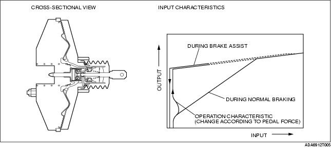

POWER BRAKE UNIT FUNCTION
id041100100800
• With the adoption of a 9-inch size, single diaphragm type power brake unit for all vehicles, compatibility between high braking performance and excellent brake feeling has been achieved.
• With the adoption of a brake assist function for ABS equipped vehicles, brake system (including ABS during emergency braking) effectiveness has been further improved.
-
- The brake assist function operates by aiding braking operation during emergency braking or other times when a high amount of brake power is required.
-
- Inexperienced drivers or drivers who panic during emergency braking may apply the brakes quickly but without sufficient force, or they may apply sufficient force but cannot maintain it for a continuous period. In these cases, the normal vehicle braking performance cannot exert sufficient force.
-
- The brake assist function determines, based on brake pedal depression speed and force, if emergency braking is occurring. If it occurs, the power brake unit applies maximum braking power.
• The structure of the brake assist function, built into the power brake unit, is simple and mechanical, to ensure a high level of reliability.
-
Note
-
• When the brake pedal is depressed strongly or depressed at higher speeds, the pedal will feel softer but the brakes will apply strongly. This is a normal effect of the brake assist operation and does not indicate an abnormality.
-
• When the brake pedal is depressed strongly or depressed at higher speeds, a clicking noise from the brake booster may be heard. This is a normal effect of the brake assist operation and does not indicate an abnormality.
-
• The brake assist equipment does not supersede the functionality of the vehicle's main braking system.
